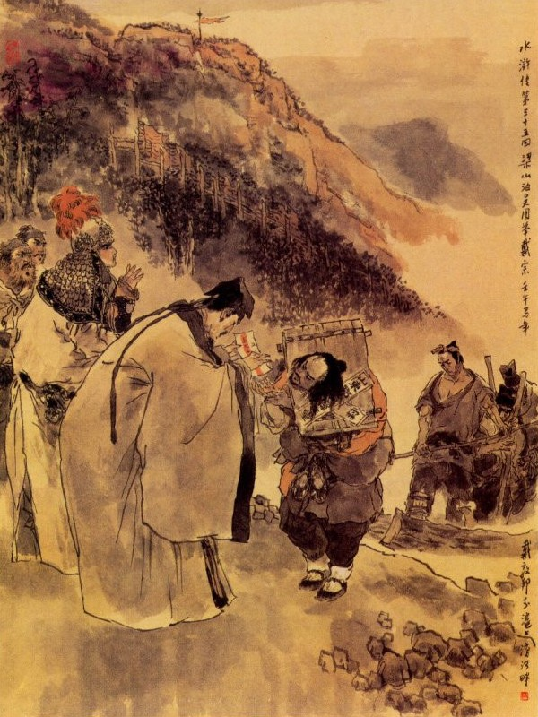
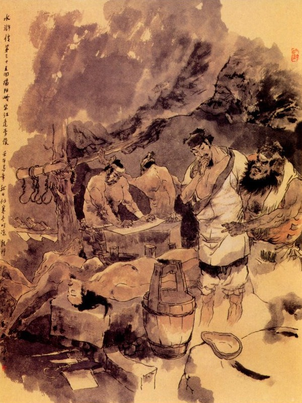
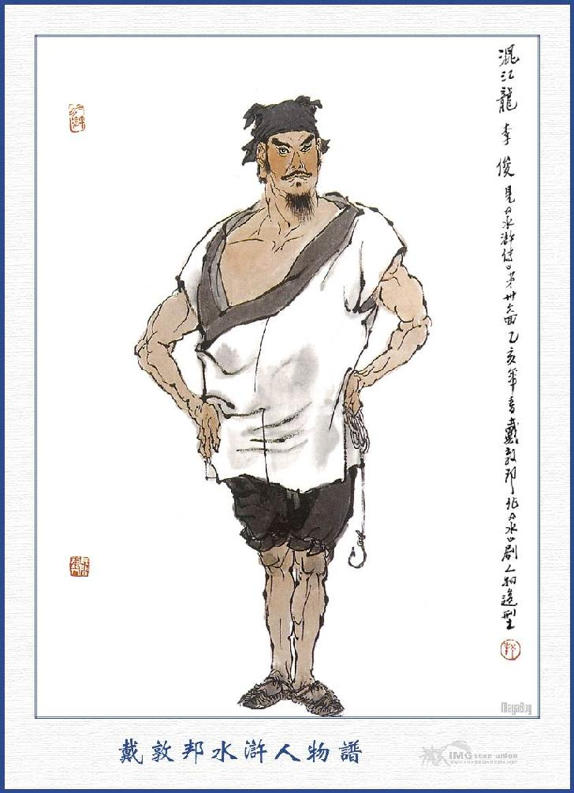
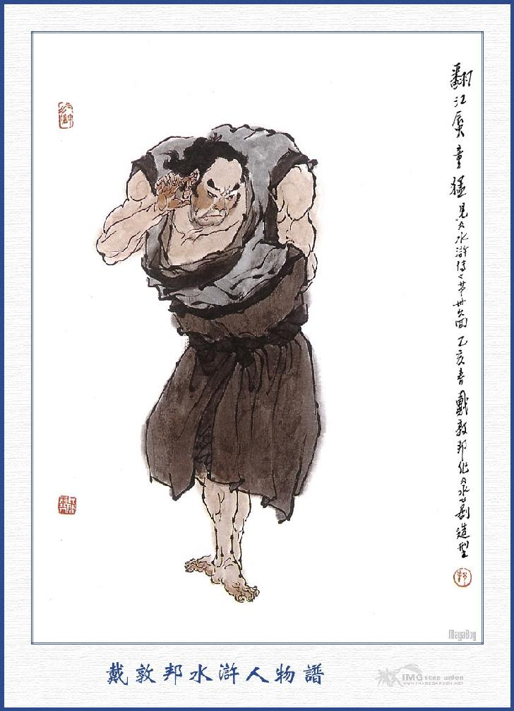

Bấy giờ Tống Thái Công nghe tiếng ồn ào, vội vàng trở dậy bắc thang trèo lên tường xem, thấy ngoài tường đóm thuốc sáng choang, hai viên Đô Đầu dẫn hơn trăm người đến vây ở đó. Hai viên Đô Đầu này, nguyên là hai anh em họ Triệu, một người tên là Năng, một người tên là Đắc, cùng mới đến huyện Vận Thành làm Đô Đầu cả. Khi đó hai viên Đô Đầu bảo với Tống Thái Công rằng:
- Thái Công có phải là người biết điều thì đem Tống Giang ra đây, để chúng tôi bắt hắn đem về nộp quan; bằng không thì chúng tôi bắt Thái Công để mang thay hắn.
Tống Thái Công đáp rằng:
- Tống Giang có ở nhà này đâu?
Triệu Năng nói:
- Thái Công đừng che mắt nữa? Chính Tống Giang ở nhà Trương Xã Trưởng ra về vào lúc tối nay, hiện có người theo dõi đến đây, còn chối từ sao được?
Bấy giờ Tống Giang đứng ở bên thang nghe vậy thì bảo với Thái Công rằng:
- Phụ thân nói với họ làm gì? Việc con đã gặp một kỳ ân xá, chắc là cũng giảm được ít nhiều. Vậy xin để mặc con ra thú trước cửa quan cũng chẳng chết nào mà sợ? Bọn này là bọn vô kiến thức, không quen biết với họ bao giờ, phụ thân nói làm chi cho mệt.
Thái Công nghe Tống Giang nói thì ra dáng xót thương mà rằng:
- Nếu vậy thì cha đây làm khổ cho con hay sao?
Tống Giang nói:
- Phụ thân không nên phiền não làm chi? Con ra thú với quan tư thế là may lắm. Bằng cứ như mọi khí mà bôn tẩu giang hồ, gặp rặt những tay giết người đốt nhà rồi lỡ ra bức bách phải đi tùng đảng thì còn bao giờ được gặp phụ thân. Ngày nay dẫu có lỡ đi đày ải xa khơi xong cũng có kỳ hạn, sau này sẽ trở về đây, bấy giờ cha con đoàn tụ với nhau há chẳng vui lắm sao?
Tống Giang nói xong liền nhảy lên thang bảo với bọn người kia rằng:
- Tôi là Tống Giang đây, xin mời Đô Đầu hãy cho vào trong trang xơi nước rồi sáng mai tôi sẽ đi đến quan. Tôi không phải đến nỗi chết gì mà ngại?
Triệu Năng nói:
- Thôi anh đừng mưu mẹo lừa cho hai anh em chúng tôi vào đây nữa.
Tống Giang cười mà đáp rằng:
- Có khi nào tôi dùng mưu mẹo để liên lụy đến anh em? Mời hai Đô Đầu cứ vào đây?
Nói đoạn xuống thang quay ra mở cổng, mời hai Đô Đầu vào trong trang rồi nhất diện sai giết gà vịt làm cơm thiết đãi và cho đám quân sĩ ăn uống. Khi ăn uống xong Tống Giang lại lấy ba mươi lạng bạc, đưa lại hai Đô Đầu mà giữ lại nghỉ ở đó một tối. Sáng hôm sau, Triệu Năng, Triệu Đắc, áp giải Tống Giang về đến huyện Vận Thành. Quan Huyện Thời Văn Bân trông thấy cả mừng, truyền đem Tống Giang ra lấy khẩu cung. Bấy giờ Tống Giang cầm bút cung nhận các lẽ đại khái sau đây.
"Vào khoảng mùa thu năm ngoái, có mua Diêm Bà Tích về làm tỳ thiếp, sau vì một việc không may, hai bên cãi cọ lẫn nhau, nhân khi say rượu, lỡ tay đánh chết rồi phải trốn tránh phương xa. Nay bị quan trên bắt được, xin thú mọi điều, không dám chút gì man trá.”
Tri Huyện xem nhận tờ cung rồi truyền cho đem giam xuống nhà giam lao. Khi đó khắp huyện nghe tiếng Tống Giang bị bắt thì ai nấy đều có lòng thương xót mà cùng nhay đến nói Tri Huyện, để rút bớt tội cho. Quan Huyện vốn có lòng tử tế với Tống Giang, nên cũng cho thả lỏng trong lao mà không bắt gông cùm trói buộc và lại đem tờ cung mà phê chuẩn ngay cho. Tống Giang lại đem tiền đút lót các nơi, cho đâu đấy đều hết lòng vị nể, không ai bới móc lôi thôi. Diêm Bà khi đó cũng đã chết rồi, không còn ai làm khổ chủ. Trương Tam thì người dưng nước lã, Bà Tích không còn, nên cũng lặng im cho xong chuyện.
Bấy giờ, quan Huyện làm thành văn án, đợi hết hạn sáu mươi ngày, giải lên trên Tế Châu để kết đoán. Quan Phủ Tế Châu xem đến hết căn do và truy theo với ngày ân xá, liền giảm tội cho Tống Giang, phạt đánh hai mươi trượng và phát vãng sang phủ Giang Châu. Các quan lại ở châu thành nhiều người quen biết Tống Giang, vả lại có tiền nong nói lót từ trước, nên đến khi phạt đánh cũng không lấy gì làm đau đớn, như mọi kẻ tội nhân.
Khi phạt đánh xong rồi, quan Phủ cho thảo công văn, sai hai tên công sai cùng tụi Thương Thiên Lý Vạn gông cổ Tống Giang mà sai sang Giang Châu. Giải ra cổng phủ thì Tống Thái Công và Tống Thanh đến đón ở đó, mời hai người công sai vào hàng thiết rượu và đưa tiền ra để tiễn tặng.
Đoạn rồi Thái Công đưa quần áo cho Tống Giang thay và gọi ra ngoài chỗ vắng mà dặn rằng:
- Ta biết Giang Châu là một nơi phong phú dễ chịu, nên phải chịu tốn tiền, xoay sở cho con đến chỗ đó. Vậy con nên cẩn thận giữ gìn rồi ta sẽ sai Tứ Lang đến thăm hỏi và tiền nong ta sẽ thường thường đưa cho, phen này con đi tất qua Lương Sơn, lỡ khi họ có xuống núi bắt ép lên nhập bọn thì thế nào con cũng chớ theo mà chớ để cho thiên hạ cười là bất nghĩa bất trung mới được. Những điều cha dặn con chớ quên sau này may có ngày đoàn tựu với nhau thế là hạnh phúc.
Tống Giang vâng lời rồi bái biệt phụ thân mà cùng hai tên công sai ra đi. Tống Khánh đưa chân Tống Giang một quãng đường xa. Khi sắp từ biệt nói với Tống Thanh rằng:
- Ta đi phen này, ở nhà bất tất phải lo nghĩ làm chi, duy phụ thân nay tuổi cao sức yếu, anh thì muôn dặm xa xôi, vậy em ở nhà phải nên trông nom phụng dưỡng, chớ bỏ đó mà sang Giang Châu mới được. Ta đi đến đâu, anh em quen biết cũng nhiều, nếu có thiếu thốn tiền nong, khắc đã có người giúp đỡ rồi sau này nhờ trời tất cũng phải có phen đoàn tụ với nhau. Nói đoạn hai anh em cũng ngậm ngùi lai láng mà cùng nhau gạt lệ chia tay.
Cố hương xa cách từ đây,
Nước non còn hẹn đến ngày trùng lai.
Đen thân đọ với đất trời,
Hỏi rằng cung kiếm chìu người hay chăng?
Sau khi từ biệt Tống Thanh, Tống Giang cùng hai tên công sai lẽo đẽo lên đường. Hai tên công sai này đã được tiền của Tống Giang tiễn tặng và cũng biết Tống Giang là người hảo hán xưa nay, nên cũng hết lòng chiêu đãi mà không hoạnh hoẹ điều chi.
Tối hôm ấy đi đến một tửu điếm, Tống Giang cùng hai tên công sai vào nghỉ trọ. Tống Giang mua rượu thịt đãi hai tên công sai cùng uống và bàn với hai người rằng:
- Chả dấu gì hai bác, các hảo hán trên Lương Sơn quen biết tôi rất nhiều, nay cứ theo đường thẳng đi qua lối này thì tất nhiên họ cướp lấy tôi mà hai bác cũng phần kinh sợ, vậy sáng mai dậy sớm mà tìm lối tắt nào để đi, cho tránh khỏi chỗ ấy là hơn.
Hai tên công sai vâng lời mà rằng:
- Nếu vậy chúng tôi cũng biết lối tắt, ta phải theo lối tắt mà đi thì họ còn biết đâu mà bắt được?
Đêm hôm ấy ba người cùng định kế với nhau rồi sáng hôm sau trở dậy ăn cơm sớm rồi cung theo lối tắt mà đi. Khi đi được hơn mươi dặm đường, chợt trông thấy ở sườn núi trước mặt có toán quân đi ra. Tống Giang nom lên thì thấy Xích Phát Quỷ Lưu Đường dẫn một toán quân hai ba mươi tên lâu la sồng sộc chạy ra chỗ Tống Giang mà toan đánh chết hai tên công sai. Trương Thiên, Vạn Lý thấy vậy đều sợ hết vía mà quỳ ngay xuống dưới đất.
Hoa Vinh hỏi lên rằng:
- Sao không tháo gông ra cho Huynh trưởng?
Tiều Cái đáp lên rằng:
- Tôi biết ý Huynh trưởng rồi. Cái đó có khó gì? Chỉ có một điều là không lưu luyến Huynh trưởng ở sơn trại thì thôi. Nhưng Tiều Đầu Lĩnh lâu nay không được gặp nhân huynh, phen này muốn cùng nhân huynh tỏ lộ mấy lời tâm phúc, vậy xin người hãy quá bộ vào chơi sơn trại rồi sẽ đi. Có vội gì?
Tống Giang nghe nói đáp ngay rằng:
- Chỉ có tiên sinh là biết được ý tôi.
Nói đoạn lại nâng hai người công sai dậy ma tiếp luôn rằng:
- Phải để cho hai người này được tử tế. thà rằng giết tôi, chứ không thể hại họ được!
Đoạn Ngô Học Cứu liền đón bọn Tống Giang, cùng vào trong núi. Khi đến bên núi, có kiệu ra đón bên đinh đoạn kim. Đoạn rồi truyền lệnh cho các vị Đầu Lĩnh cùng về tụ họp và đón tiếp vào Tụ Nghĩa Sảnh. Khi vào tới tụ Nghĩa Sảnh, Tiều Cái ra ý ân cần cảm tạ mà rằng:
- Từ khi ở đất Vạn Thành, nhờ ngài cứu thoát cho khỏi nguy nan, anh em thường vẫn nhắc đến ơn lớn của ngài, mới đây lại tiến dẫn các vị hào kiệt lên núi, thực là làm cho vẻ vang sơn trại vô cùng, ơn ấy biết bao giờ mà lũ chúng tôi biết báo đền cho xứng đáng.
Tống Giang đáp rằng:
- Chúng tôi sau khi từ biệt các ngài rồi giết đứa dâm phụ, phải đem thân đi đào tẩu giang hồ, hơn một năm trời dòng dã, dạo trước đã toan lên núi để thăm hỏi các ngài, song giữa đường tiếp được gia thư nói rằng phụ thân tạ thế, nên phải vội vàng về ngay. Ai ngờ đó là thân phụ mong mỏi, sợ khi nhập bọn với ai, nên mới viết thư nói dối gọi về và cũng bởi đó nên quan trên bắt được. Nhưng cũng may được nhiều người che chở trông nom, nên cũng không có điều chi khổ sở; mà đi đầy đến đất Giang Châu cũng là một nơi dễ chịu. Nay các ngài đã có lòng cho gọi, tôi không đến bái yết thì không tiện, song ngặt vì kỳ hạn đến nơi, không thể nào ở lâu đây được, nay anh em đã được gặp nhau, thế cũng là đủ, vậy xin các ngài tha lỗi cho tôi đi.
Tiều Cái nói:
- Có điều chi mà phải vội vàng thế, xin Huynh trưởng ngồi chơi thư thả rồi sẽ hay.
Nói đoạn mời Tống Giang cùng ngồi vào ghế giữa. Tống Giang cho gọi hai tên công sai ngồi sát ở hai bên mà không hề rời xa một bước. Tiều Cái bảo các đầu lĩnh chào Tống Giang rồi cho ngồi dàn ra hai bên và sai tiểu đồng rót rượu. Trước hết Tiều Cái chào Tống Giang rồi từ Quân Sư Ngô Học Cứu cho đến Bạch Thắng, đều cất chén mời khắp lượt. Rượu được vài tuần, Tống Giang lại đứng dậy mà rằng:
- Thế này thì biết đủ tấm lòng thân ái của các ngài đối với Tống Giang, song Tống Giang hiện đương là người có tội, không thể nào mà ở lâu được, vậy xin từ tạ để đi.
Tiều Cái cười rằng:
- Nhân huynh cần gì phải như vậy? Nếu nhân huynh không muốn giết hại hai tên công sai thì cứ cho họ ít tiền rồi tống họ về, sau có lý thế nào cũng chỉ nói là bọn Lương Sơn Bạc cướp mất Huynh trưởng rồi, không có kẻ nào trị tội họ mà sợ.
Tống Giang đáp rằng:
- Xin Huynh trưởng chớ nói những lời như thế? Nếu thế không phải là cứu vớt Tống Giang mà chính là làm khổ Tống Giang đó, Tống Giang này trên có cha già chưa từng được một ngày phụng dưỡng, có lẽ nào dám trái lời nghiêm huấn làm cho liên lụy đến cha? Trước đây cũng vì một lúc cao hứng, toan đến đây ở cùng các ngài, nhưng may sao trời kia xui khiến lại gặp được Thạch Dũng mà được trở về nhà, cho đến cố hương rồi sau phụ thân nói hết đầu đuôi; bắt phải ra thú quan tư mà chịu tội cho im các chuyện. Khi bước chân ra đi đày ở đất Giang Châu, phụ thân lại ân cần dặn dò, không được đua theo sự khoái lạc của mình mà làm lụy đến cả cha em nhà cửa. Nay nếu Tống Giang tôi không nghe lời đó thì là trên trái lẽ trời, dưới trái lời cha, trọn đời làm kẻ bất hiếu bất trung, dẫu có sống nữa cũng là vô ích. Nếu các ngài không có lòng tha cho Tống Giang được đi thì Tống Giang này xin chết ngay trong tay các ngài này cho rảnh chuyện.
Nói đoạn lai láng hai hàng nước mắt rồi đứng dậy mà quỳ cúi rạp suống đất.
Tiều Cái, Ngô Dụng, Công Tôn Thắng đều đỡ Tống Giang dậy mà rằng:
- Nếu Ca Ca quyết định đi sang Giang Châu thì xin hãy thư thả một hôm rồi sáng mai sẽ xin đưa ngài xuống núi.
Mấy người cùng nhau gìn giữ năm lần bảy lượt. Bấy giờ Tống Giang mới nhận lời mà lại ở đó. Song Tống Giang cũng nhất định không cho tháo bỏ gông ra và cứ bắt hai người công sai ngồi sát luôn bên cạnh, không để cho rời một bước nào.
Sáng sớm hôm sau, Tống Giang lại nằng nặc quyết ý đòi đi, Ngô Dụng liền sai bày tiệc tống hành và báo với Tống Giang rằng:
- Dám thưa Ca Ca, Ngô Dụng tôi có một người anh em chí thân, hiện đang làm Tiết Cấp, coi nhà lao ở Giang Châu, họ Đới tên Tung, người đó thường gọi là Đới Viện Trưởng, anh ta giỏi việc thần hành, một ngày có thể đi được tám dặm đường, nên người ta thường gọi là Thần Hành Thái Bảo. Người ấy chuyên là một người trọng nghĩa khinh tài, nhân vậy đêm qua tiểu đệ có viết một phong thư, để Huynh trưởng sang đó nên kết thân với người ấy rồi sau đây lỡ có việc gì thì người ấy sẽ thông tin cho anh em cùng biết.

Nói đoạn đưa thư cho Tống Giang rồi mời vào dự tiệc. Khi ăn tiệc xong, các vị Đầu Lĩnh hết sức giữ Tống Giang không được, liền đem ra một mâm vàng bạc gói tặng Tống Giang và lại đưa hai mươi lạng bạc cho hai tên công sai rồi sai người gánh hành lý mà đưa chân xuống núi. Ngô Học Cứu cùng Hoa Vinh đưa đến đường cái, đi ra ngoài hai mươi dặm rồi mới bái biệt trở về.
Bấy giờ hai tên công sai, thấy Tống Giang đi đến đại trại nhân mã, các vị Đầu Lĩnh đều phải lại phục, lại được thêm kim ngân tiễn tặng như vậy thì trong lòng lấy làm nửa mừng nửa sợ mà từ đó hết sức hầu hạ Tống Giang, không hề chút gì sơ suất.
Ba người cùng đi được hơn nửa tháng trời, đến một nơi có một tòa núi cao, hai tên công sai nói với Tống Giang rằng:
- Ở đây là núi Yết Dương, đi qua núi Yết Dương tức là con sông Tầm Dương, từ dó sang Giang Châu toàn là thủy bộ cũng không còn xa mấy nữa.
Tống Giang đáp rằng:
- Nếu vậy bây giờ trời còn đương sớm, ta nên đi mau qua núi rồi sẽ tìm chỗ nghỉ mới được.
Nói đoạn ba người cùng rảo bước đi mau lên núi, đã trông thấy ở dưới chân núi có một hàng rượu quay lưng vào núi mà trước mặt toàn cây cổ quái um tùm. Tống Giang thấy vậy với hai người kia rằng:
- Chúng ta đương đói khát, hãy vào hàng kiếm thức gì ăn uống rồi sẽ đi.
Đoạn rồi ba người cùng đi vào hàng rượu. Hai tên công sai để các đồ hành lý lên bàn, dựng gậy vào một bên vách rồi Tống Giang mời hai người ngồi lên ghế trên mà tự mình ngồi xuống phía dưới. Ba người ngồi đợi, mãi đến nửa tiếng đồng hồ không thấy ai ra bán hàng. Tống Giang liền kêu lên rằng:
- Chủ nhà ở đâu, sao không ra bán hàng?
Nói vừa dứt lời thì thấy tiếng trả lời rằng:
- Tôi ra đây, tôi ra đây.
Bấy giờ thấy một anh chàng to lớn râu quăn sắc đỏ, mặt hổ kéo tia, đầu đội khăn mích, mình mặc áo trấn thủ, để hở hai cánh tay, phía dưới buộc một cái khăn rất lớn, ở trong nhà chạy ra cúi chào ba người mà hỏi:
- Các ngài xơi bao nhiêu rượu?
Tống Giang nói rằng:
- Chúng tôi đương đói bụng, ở đây có thịt thà gì không?
- Thưa ngài, ở đây chỉ có thịt trâu chín với rượu trắng thôi.
- Được lắm, thái cho ba cân thịt, và rót một nai rượu đem đây.
Anh chàng kia nói rằng:
- Thưa ngài, xin ngài tha lỗi cho, ở hàng tôi đây phải trả tiền trước rồi mới bán rượu thịt sau.
Tống Giang cười rằng:
- Ta trả tiền trước cũng được chứ sao?
Nói đoạn liền mở khăn gói lấy mấy lạng bạc vụn đưa ra. Anh chàng kia đứng bên cạnh, liếc nom thấy khăn gói của Tống Giang hơi nặng thì trong bụng lấy làm vui mừng hớn hở, liền cầm tiền mà vội quay vào thái thịt rót rượu rồi lấy ba cái chén, đôi đũa, đem ra rót rượu cho ba người uống. Ba người vừa uống rượu vừa nói chuyện với nhau. Bọn giang hồ bây giờ thường nói là có nhiều người hay bỏ thuốc mê vào rượu cho thiên hạ uống rồi cướp lấy tài vật kim ngân, lại giết người lấy thịt đem ra làm bánh, nhưng thiết tưởng chả có lẽ nào lại thế được! Anh hàng rượu đứng cạnh nghe thấy vậy thì cười mà nói rằng:
- Ba các ông đã nói thế thì chớ nên uống rượu vào. Rượu thịt của tôi toàn là thuốc mê ở trong đó.
Tống Giang cũng cười mà rằng:
- Thôi bác đừng nói dỡn nữa. Thấy người ta bảo là thuốc mê thì cũng nói là có thuốc mê.
Hai tên công sai bảo Tống Giang rằng:
- Đại Ca xem thứ rượu này uống nóng thì tốt hơn.
Anh chàng kia tiếp luôn rằng:
- Các ông muốn xơi rượu nóng để chúng tôi đi hâm.
Nói đoạn rồi đem hâm nóng rồi rót luôn cho ba người uống. Ba người vừa mới uống được một lượt rượu thì hai tên công sai bỗng đờ mắt sè bọt mép ra rồi ngã lăn xuống. Tống Giang thấy vậy, vội đứng lên kêu rằng:
- Sao các bác mới uống một chút rượu mà đã say như thế?
Nói đoạn quay vào toan đỡ hai người kia dậy. Dè đâu chưa kịp đỡ hai người kia thì tự mình đã thấy hoa mắt choáng đầu rồi cũng nằm vật ra đó. Bấy giờ anh chủ hàng nói một mình rằng: Trời ơi! Mấy ngày không có gì buôn bán, hôm nay trời lại đem cho ba món hàng này thực là quý hóa quá. Nói xong liền vác Tống Giang đem vào nhà mổ người, ở trong sườn núi, đặt lên trên ghế mổ rồi lại trở ra vác luôn hai người công sai vào. Đoạn đi trở ra đem các đồ hành lý vào nhà trong mở ra xem thấy rặt những vàng bạc rủng rỉnh thì tự nói lẩm bẩm rằng: "Ta mở hàng mấy năm nay, chưa bao giờ gặp thằng tù nào nhiều của như thế này? Quái lạ! Một thằng bị tù sao lại lắm vàng như thế? Chẳng hay là trời đem đến, để đãi riêng ta hẳn?” Xem trong cái bọc rồi lại cẩn thận mà chạy ra cửa đứng ngóng. Được một lát người ở dưới núi đi lên, đi thẳng vào tửu điếm. Anh chủ hàng trông thấy vội vàng đón tiếp mà hỏi luôn rằng:
- Đại ca đi đâu thế?
Bọn kia có một anh to lớn đáp rằng:
- Chúng tôi định lên đây đón một người này, chắc hẳn bây giờ họ đến đây thì phải? Chúng tôi ngày nào cũng đứng đón ở chân núi mà sao mãi không gặp, hay là họ còn lươn khương ở đâu?
Anh chủ hàng hỏi rằng:
- Đại Ca định đón ai?
- Tôi đón một người nam tử thực ra tuồng ở đây.
- Nam tử ra tuồng là ai thế?
- Bác muốn nghe tên ông ta hay sao? Ông ta là Tống Giang làm Áp Ty ở huyện Vận Thành chứ ai?
- Có phải là Sơn Đông Cập Thời Vũ Tống Công Minh chăng?
- Phải, chính ông ta.
- Ông ta đi qua đây làm gì?
- Nào tôi có biết đâu. Nguyên mấy ngày hôm nọ, có mấy anh em ở Tế Châu, trở về nói chuyện rằng: Ông ta không biết bị việc gì mà phải giải tới Tế Châu rồi kết án đày sang đất Giang Châu, thế nào cũng phải đi qua lối này, chứ không còn đi lối nào được. Trước đây ông ta ở Vận Thành, tôi cũng cố ý muốn tìm cho được gặp, huống chi ngày nay qua ở đất này thì có lẽ nào mà không đón cho kỳ được? Nhân thế phải đón ở quãng núi này, đến bốn năm hôm nay, không gặp một người tù nào đi qua hết thảy. Hôm nay đợi mãi sốt ruột, định đến đây thăm bác và kiếm thức gì chén một thể. Thế nào họ hàng dạo này có khá không?
Chủ hàng đáp:
- Chả dấu gì đại ca, mấy tháng nay không có một chút gì cả. May sao trời lại run rủi dắt cho ba cái hàng hóa đến đây, nhờ trời cũng kha khá.
Anh chàng mới đến vội vàng hỏi rằng:
- Ba người ấy thế nào?
- Một người tù với hai người công sai.
Anh chàng kia nghe nói giật mình hỏi rằng:
- Người tù đi đấy có phải là thấp béo đen đen không?
Chủ hàng đáp:
- Phải, người cũng không lấy gì làm to lớn mà nét mặt đỏ tía như quả bồ quân vậy.
- Chưa động thủ đến chứ?
- Chưa, tôi vừa khiêng vào phòng, đợi bọn người nhà chưa thấy đứa nào về, nào đã hạ thủ được đâu?
Anh chàng kia ra dáng hoảng hốt mà rằng:
- Nếu vậy để tôi vào xem qua xem sao?

Nói đoạn bốn người cùng vào phòng mổ. Khi vào tới nơi thấy Tống Giang cùng hai tên công sai, nằm ngổn ngang ở trên ghế mổ. Anh chàng kia tuy nom thấy Tống Giang, song vẫn là không biết mặt xưa nay, lại nom đến chỗ kim ấn thì không được rõ ràng, nhân thế trong bụng nghi hoặc, không biết có phải là đích xác hay không? Chợt nghĩ ra một kế, liền bảo lấy gói hành lý của đám công sai để giở ra xem. Khi xem đến công văn, anh chàng kia ra dáng hớn hở mà rằng:
- Trời ơi! Nếu tôi đến chậm một chút thì Ca Ca không còn gì là tính mệnh? Anh lập tức lấy thuốc cho Ca Ca mau tỉnh dậy thì mới được.
Chủ hàng lật đật đi pha thuốc rồi cùng anh chàng kia vào phòng tháo gông cho Tống Giang mà đổ thuốc cứu cho tỉnh dậy. Đoạn rồi bốn người cùng túm vào dìu Tống Giang mà đặt ở khách vị nhà ngoài. Được một lát, Tống Giang mở bừng mắt dậy, thấy bốn người kia đứng ở chung quanh thì lấy làm kinh lạ, không hiểu ra sao. Anh chàng kia vội vàng ra trước mặt mà cúi lạy Tống Giang. Tống Giang lấy làm ngạc nhiên mà hỏi rằng:
- Ông là ai? Hay là gặp tôi trong giấc mộng?
Nói đoạn thì cũng thấy anh chủ hàng quay ra sụp lạy dưới đất. Tống Giang lại hỏi:
- Ở đây là chỗ nào? Hai ông là ai, xin cho tôi được biết?
Anh chàng kia đáp rằng:
- Tiểu đệ họ Lý tên Tuấn, người ở Lư Châu làm nghề chở thuyền ở sông Dương Tử, vì có tài lặn lội dưới nước nên người ta thường gọi là Hỗn Giang Long Lý Tuấn. Người anh em bán hàng rượu ở đây là người ở núi Yết Dương, xưa nay chỉ nhờ nghề cướp bóc kiếm ăn, nên người ta thường gọi Thôi Mạnh Phán Quan Lý Lập. Còn hai người này là hai anh em ruột cũng chuyên nghề bóc lột kiếm ăn, có tài lội nước bơi thuyền, mới đến ở với Lý Tuấn tôi, một người là Động Dao Đồng Uy và một người là Phiến Giang Thần Đồng Mãnh.
Bấy giờ bốn anh cùng lạy Tống Giang bốn lạy rồi Tống Giang hỏi rằng:
- Vừa rồi đã đánh thuốc độc cho Tống Giang mê chết, vậy sao lại biết Tống Giang mà cứu dậy?
Lý Tuấn đáp rằng:
- Tiểu đệ có một người anh em buôn bán ở Tế Châu về, kể chuyện nhân huynh bị quan tư bắt bớ đày sang đất Giang Châu, nhân thế tiểu đệ liền đến đây để đón bốn hôm nay. May cũng là sự bất thình lình vào hàng định uống chơi dăm chén rượu, dè đâu thấy Lý Lập nói chuyện, liền có bụng ngờ mà lần vào trong phòng để xem. Bấy giờ tiểu đệ cũng không biết mặt nhân huynh, sau phải đem công văn ra mới biết. Tiểu đệ nghe nhân huynh đã lâu, nhiều phen đã định đến hầu mà không sao đi được. Nay được gặp gỡ ở đây, thực là hạnh phúc vô cùng. Vậy chẳng hay nhân huynh vì lẽ chi mà phải đày sang Giang Châu như thế?
Tống Giang liền đem chuyện mình giết Bà Tích, cho tới khi bị quan tư bắt được, kể hết cho mọi người nghe. Bốn người đều khen ngợi thở than rồi Lý Lập bảo với Tống Giang rằng:
- Chẳng hay Ca Ca ở lại chốn này, can chi phải đến lao thành ở đất Giang Châu mà chịu khổ?
Tống Giang đáp rằng:
- Bọn Lương Sơn Bạc đã hết lòng giữ tôi ở đó mà tôi không thể nào lưu lại, để liên lụy đến phụ thân tôi huống chi ở đây?
Lý Tuấn nghe nói, liền quay lại bảo Lý Lập rằng:
- Ca Ca là bậc nghĩa sĩ, hẳn không khi nào liều, vậy bác nên cứu cho hai người công sai kia dậy.
Lý Lập vội vàng gọi đám người nhà mới về đó vào khiêng hai người công sai ra ngoài hàng rồi đem thuốc giải cứu tỉnh dậy. Khi hai tên công sai tỉnh dậy đều nhìn nhau mà cùng nói rằng:
- Chúng tôi có lẽ đi đường khó nhọc, ngủ say lúc nào không biết.
Mọi người nghe nói đều cười phá lên.

LÝ TUẤN
ĐỒNG UY

ĐỒNG MÃNH
Chiều hôm ấy Lý Lập làm rượu thiết đãi mọi người rồi giữ ở đó một tối. Sáng hôm sau lại thiết đãi cơm rượu tử tế và đưa gói hành lý trả lại hai người công sai, bấy giờ bọn Lý Tuấn, Đồng Uy, Đồng Mãnh, mời bọn Tống Giang mà từ giã Lý Lập rồi cùng về nhà Lý Tuấn. Khi tới nơi Lý Tuấn cũng thiết đãi ân cần và bái Tống Giang kêt làm huynh đệ rồi lưu lại ở đó mấy hôm. Cách vài ba hôm, Tống Giang từ tạ xin đi, Lý Tuấn liền mở tiệc tiễn hành và trả các đồ hành lý cho ba người rồi đưa chân khỏi núi Yết Dương mới ngậm ngùi bái biệt
Nước bèo gặp gỡ tự nhiên,
Hay đâu hoạn nạn là duyên giang hồ.
Bọn Tống Giang hôm đó từ gĩa Lý Tuấn, Đồng Uy, Đồng Mãnh rồi ba người cùng nhau thẳng lối trông chừng Giang Châu. Vào khoảng trưa hôm ấy, đi đến một nơi cửa nhà đông đúc, phố xá chen vui thì chợt thấy có một toán người, đương túm đen túm đỏ mà đứng châu vào một chỗ.
Tống Giang thấy vậy rẽ đám đông đi vào xem thì thấy có một anh chàng đánh gậy bán thuốc cao, đương múa may quay cuồng ở giữa.
Anh chàng kia đi một bài gậy rồi lại vất gậy ra đi một bài quyền. Tống Giang lấy làm thích chí khen ngợi luôn mồm. Đoạn rồi anh chàng kia bưng cái mâm đi đến trước mặt mọi người mà nói rằng:
- Chúng tôi ở phương xa đến đây, tuy võ nghệ không có gì, song được các ngài có lòng hạ cố ban khen, vậy nếu các ngài có cần các thứ thuốc cao thì xin cho tiền để mua, bằng không thì cũng xin các ngài rộng lòng cứu giúp một chút tiền ăn, để khỏi phụ công con nhà khó nhọc.
Anh chàng nói hết một lượt không ai cho một đồng nào. Chàng ta lại quay lại lượt nữa mà nói rằng:
- Xin các ngài rộng tay sớt bớt ra cho.
Chàng nói đã mỏi mồm song bọn người đứng xem chỉ trắng dã mắt để nhìn mà không ai cho một đồng nào gọi là có. Tống Giang thấy vậy, liền lấy năm lạng bạc đưa ra mà bảo người kia rằng:
- Giáo đầu ơi! Tôi là một kẻ phạm tội, không có gì để giúp đỡ, vậy có năm lạng trắng đây, gọi là tỏ chút lòng thành để ngài cầm xơi nước.
Người kia cầm lấy năm lạng bạc rồi cảm ơn mà rằng:
- Trấn Yết Dương là một nơi có danh tiếng, thế mà không có ai biết đến võ nghệ là gì! May sao lại gặp được vị ân quan này cũng là bị tù tội qua đây mà lại cho được năm lạng bạc như thế, thực là:
Uổng công cười Trịnh Nguyên Hòa,
Lầu xanh mua chuộc câu ca tiếng cười.
Cứ gì hào phú mới chơi,
Áo lành vị tất là người phong lưu.
Nói xong lại tiếp luôn rằng:
- Năm lạng bạc này bằng năm mươi lạng khác, tôi xin cúi đầu bái tạ xin hỏi cao tính đại danh là gì, để tôi biểu dương cho thiên hạ cùng biết.
Tống Giang mỉm cười đáp rằng:
- Giáo sư ơi! Món tiền nhỏ mọn con con thế có kể làm gì?
Đương khi nói vậy thì có một đại hán rẽ đám đông đi vào mà quát lên rằng:
- Thằng này là thằng nào? Đồ tù tội ở đâu? Dám đến đâu làm mãi tiếng đất Yết Dương của chúng ta như vậy?
Nói đoạn giơ tay quyền lên để đánh Tống Giang. Mới hay:
Lận tài là của hiếm hoi,
Xưa nay nghĩa hiệp trên đời được bao?
Đỉnh chung đã chắc ai nào,
Vàng chôn ngọc lấp, tiếng hào vắng tanh?
Trăm năm thế thái nhân tình
Khiến người lại nhớ câu Bình Nguyên Quân
Biết ai là kẻ xuất trần
Biết ai là Mạnh Thường Quân ở đời?
Ai đi nhắn nhủ đôi lời
Anh chàng họ Tống là người sao đây?
Lời bàn của Thánh Thán
Trong một bộ sách, tả một trăm linh bảy người rất dễ, tả Tống Giang rất khó, nên đọc bộ sách này cũng được chuyện 107 người rất dễ mà đọc chuyện một Tống Giang rất khó hiểu. Vì tả chuyện 107 người, đều đúng ngọn bút viết ra, tốt thì thực tốt, xấu thì thật xấu, còn tả Tống Giang lại không thế, vội đọc qua thì thấy rất tốt, đọc lần nữa thì thấy tốt xấu đủ hai phần, lại đọc kỹ một lần nữa, thấy tốt không bằng xấu, sau cùng đọc xét ra, thấy đều là xấu không còn gì tốt!
Hỡi ơi! Đọc Thủy Hử mà đến hai ba lần, sau đến cuối chót mà thực cho là xấu cả không tốt, há chẳng phải là người đọc sách giỏi ư? Song ta lại nghĩ rằng: Do chỗ toàn tốt của Tống Giang mà đọc đến chỗ toàn xấu thì còn thấy dễ; Do chỗ toàn xấu của Tống Giang mà tả nên toàn tốt mới thực khó làm! Nay đọc đến chuyện, xem từ lời nói việc làm, tìm từng chút một, há chẳng cho rằng một bậc quân tử trung tín đốc kinh, đi đâu cũng có kẻ yêu, dù là trộm cướp, thấy rằng từng chữ, từng câu, từng tiết, từng hồi, không chút chê trách, tuy thế, há phải Tống Giang thực là người nhân con hiếu vậy? Sử ký không chép như thế ư? Chép vua Võ Triều Hán, chưa từng có một chữ chê đến Võ Triều Hán, thế mà độc giả sau này, chẳng mấy một, không tỉnh ra cho Hán Võ là không phải thế, như vậy chê khen vốn ở ngoài vòng bút mực thì ra than ôi! Tỳ Quan chép ngoại sử đã cùng một phép với chính sử. Há dễ viết thay! Há dễ viết thay!